contents | previous | next There could be but little doubt but that the correspondence between Montalbert and Rosalie was suspected, if not absolutely discovered. Firmly as he thought he could rely on the fidelity of the person he had employed, it was but too evident that he was in some degree betrayed, and Rosalie, whom he found in tears, acknowledged that their situation admitted not of hesitation; that Montalbert must either return immediately to Italy, or risque every discovery in regard to his mother, which he had so many reasons to avoid. It was vain to weary themselves with conjectures as to the source from which Miss Vyvian derived the intelligence that she detailed with so much malicious pleasure. On any other occasion Montalbert
would have flown into one of those transports of passion to which he was but too subject, and have insisted on an explanation; but the tears and terrors of Rosalie, who saw the discovery likely not only to produce evey kind of mischief they dreaded, but eventually to separate them for ever, now checked every impulse of resentment, and left to Montalbert no other wish than to secure her his, and to return to Italy before the malignity of his cousin should have conveyed intelligence thither, which would embroil him for ever with his mother, and probably deprive him of that affluence to which it was now his delight to think he should raise the woman he adored. There now seemed no alternative between resigning Montalbert for ever, depriving him of his inheritance by a discovery, or consenting to sacrifice her own scruples. It is not difficult to forsee that she chose the latter. Another whole day was to pass before the return of her mother; and it was settled that the priest,
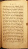 View image of 201 whom Montalbert had engaged, should call early in the morning on pretence of a messge from Mrs. Lessington to Rosalie; that Montalbert should soon after arive on his way to Mrs. Vyvian's, of whom he was supposed to be on the point of taking leave—and that the marriage should then be celebrated according the the Romish ritual, in the persence of a friend whom Montalbert was to bring with him. There was, in fact, neigher difficuly nor danger of detection in this arrangement. The country servants of Mrs. Lessington, a maid and a boy, took every thing that was told them for granted. The ceremony was soon over, and a testimony of its performance being given to Rosalie, the priest departed to London with the friend of Montalbert, while he himself went to Mrs. Vyvian's, where he intended to dine, and where he hoped his aunt would, without any solicitation, send for Rosalie. In this, however, he was mistaken: he found Mrs. Vyvian so much affected by
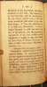 View image of 202the scene of the day before, that she was confined to her bed. She admitted him to her bed side, and he was shocked to see the havoc which even a few hours acute uneasiness had made in her enfeebled frame. "You see, (said she), how it is with me, Montalbert. I have no longer strength to resist that more corrosive of all miseries, the estrangement and ingratitude of my own children—of my daughters, I ought to say—for Charles, my poor boy, I believe loves me; but what I suffer from them, Montalbert, is indeed—— 'Sharper than the serpent's tooth." Montalbert endeavoured to sooth her agitated spirits, by representing to her, that her daughters were young and thoughtless, giddy with youth, health, and prosperity, and that a few years would, in all probability, produce a fortunate change in their volatile dispositions. "A few years? (said Mrs. Vyvian, with a melancholy smile); and do you think that a very
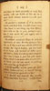 View image of 203few years, or more probably a very few months, will not finish all for me in a much more certain manner?—O yes! yes!"...... She paused a moment as if to recover herself, and then said, in a still lower tone, "But there is one thing, my dear Harry, that I wish to say to you, perhaps—perhaps I may never see you agan, and I would feign———" Montalbert remained silent in anxious expectation of what she was going to say; but, as if she could not collect resolution enought, she sighed deeply, put her hand to her head, and seemed to suffer great pain there; then, becoming more languid, said, "But I hope I shall see you again, Harry, when I am more able to converse: yet surely you do not mean to prolong much your stay in England?" "If my mother would grant me permission, (answered he), to stay till spring, I own it would be agreeable to me." "I should not suppose she would, Harry, (said Mrs. Vyvian). I understood
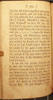 View image of 204that her last letters expressed great anxiety for your return, and you know she does not very patiently bear contradiction.....But I wonder, Montalbert, what attractions England can have for you. Oh! if it were in my power to go to Italy, how ready would I quit this country for ever; and yet———"—Again she hesitated and sighed, and Montalbert, finding no pretence for naming Rosalie, and that it was unlikely he should pass the day with her as he had fondly hoped, assured her he would see her again several times before he left England, since he should await the arrival of his next letters before he fixed the day of his departure, and then took his leave. It was but too certain, however, that he had that morning received the most positive commands from his mother to set out immediately, mingled with some severe reproaches for his having delayed his journey, from time to time, so much beyond that which he had originally fixed for his stay. He now thought it more
) View image of 205 View image of 205 than ever impossible to leave Rosalie, though he had sworn that if she were once irrevocably his, he would go without further hesitation. To invent some plausible pretence for the evasion of this promise was now his object, and so great was the reluctance with which he thought of going, that he sometimes determined rather to brave the displeasure of his mother, and boldy to combat her prejudices, than leave his wife, now more dear to him than ever: but was there no medium between these extremities? was it not possible for him to take her with him?—While he meditated on the practicability of such a project, and the arguments he should use to prevail upon her to consent to it, he found himself before the door of Mrs. Lessington's house, and was going in, when he was amazed and concerned to observe her and her daugher Maria getting out of a coach, which he had till then imagined had just stopped at the house of one of her neighbours. As he could not retreat without being seen, and his uneasy curiosity
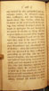 View image of 206was excited by this unexpected and unwelcome return, he advanced towards Mrs. Lessington, and was beginning a speech about Mrs. Vyvian, whose name he meant to use as an exuse for his calling; but, without seeming to attend, she began to apologize for not having it in her power to ask him in, being, she said, in great alarm on account of her daughter. "What daughter?—and oh! for Heaven's sake, what is the matter?"—were words that were on the point of issuing from Montalbert's lips, who thought only of Rosalie: when this indiscretion on his part was prevented by Mrs. Lessington's proceeding to tell him, that her eldest married daughter, who was near her time, had suffered from being overturned in a chaise, and had entreated to see her mother, who had, therefore, hastened from London, where she received the letter, to pack a few necessaries, and was setting out post immediately afterwards for the house of her daughter in Suffex. Montalbert, alarmed lest Rosalie was going
) View image of 207 View image of 207too, trembled so much, that he had not courage to ask; but to leave the house without knowing was impossible. Regardless, therefore, of the rules of decorum, which certainly demanded that he should absent himself, he followed Mrs. Lessington into the house, where his sudden reappearance, and the unexpected arrival of her mother, had such an affect on the countenance and manner of Rosalie, as could not have excaped observation, had not Mrs. Lessington and Maria been both much engaged with the immediate preparation for their journey; for amidst her maternal anxiety for her daughter, the elder lady was by no means indifferent to the appearance she was to make among her former country neighbors; and though she was still in deep mourning, she observed that it was not the less necessary to be "tolerably dressed." Miss Maria was of course more solicitous on this important matter than her mother, and in the midst of their giving orders
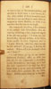 View image of 208to one to run to the mantua-makers, and another to fetch home a new bonnet, &c. &c. they neither one of them seemed to recollect that it was neccsary to make some arrangement about Rosalie, or even to remember that she was in the house. She remained, therefore, a few moments in the parlour with Montalbert, who, advancing trembling to her, inquired eagerly if she also was going? "I think not, (answered she); but my mother, in her hurry, seems totally to have forgotten me."—"I pray Heaven, (said he), that you may be left behind! If you go, I shall be distracted. When will it be decided?—How can you know?" "I had better go up to my mother, (answered Rosalie), offer to assist her, and ask for her commands."—O hasten, (cried Montalbert), my angel, or I shall die with impatience!—I must stay till I know what is to be your destination, and will make some pretence for my intrusion." Rosalie then went up to her mo-
) View image of 209 View image of 209ther, who seemed to be awakened, by her presence, to some sense of recolletion as to what was to become of her youngest daughter during her absence. "I don't know, child, (said she), how to take you with us very well, as you brother Blagham is in town for two days on law business, and is desirous of going down with us in a post chaise."—Rosalie's heart beat so, that she could hardly breathe. "I declare, (continued her mother), I know not how to manage about you. To be sure it will be but a disagreeable journey, and I suppose, my dear, you do not want to go?" "If I could be of any use to my sister," said Rosalie hesitating. "Oh! as to that, (answered Mrs. Lessington) there is no occasion to be sure; but it will be lonely for you at home, unless, indeed, Mrs. Vyvian would be so good as to take you." Rosalie knew, from the scene of the preceding morning, that Mrs. Vyvian could
) View image of 210 View image of 210not, without the exposing herself anew to the insults of her daughter, which it was painful even to think of. This, however, she could not now explain to her mother, who, after a moment's hesitation, proceeded......"I have a mind to send to Mrs. Vyvian; yet I don't know—perhaps it will be inconvenient to her. There are times when I know it would be painful to her to have company;—but—let me—see—I dare say my friends the Hillmores would take you for a few days, and then you might come back; and Mrs. Vyvian would, perhaps, nay I am sure she would, have you with her as much as her spirits will allow, and by that time—most probably, you know we should be come back." Though Rosalie knew the Hillmores were the most disagreeable people in the world, she had neither courage to object, nor presence of mind to propose any other plan. She thought she saw in her mother's manner an evident wish to get her off her
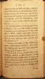 View image of 211hands, on the present occasion, without much solicitude as to the propriety of her situation during her absence; and at that moment she felt happy in the consciousness of being the wife of Montalbert, who would, in every event, defend and protect her. She remained silent, however, and Mrs. Lessington, who was still busily engaged in packing, at length turned to her, and said, "Well, child! and what do you say to the plan of passing the little time we shall be away between Mrs. Vyvian and Mr. Hillmore's?" "I know very little of Mr. Hillmore's family, (said Rosalie timidly); but I dare say, Madam, you are sure they would be kind enough to receive me." "To be sure I am, (replied Mrs. Lessington); and as to Mrs. Vyvian, I wish I could see her myself—but—I have not time.—However—stay—do you think Mr. Montalbert is gone?—I dare say he would be so good as to carry a message for me."
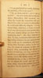 View image of 212"I am persuaded he would, (said Rosalie timidly), if he is not gone." "Do go down and see: no—I will go myself." She then descended to the room where Montalbert still remained, who, when he heard the commission she gave him to his aunt, accepted it with transport he could with difficulty disguise. "I only waited here, (said he), to know if I could be of any use to you in your present hurry, and you cannot oblige me more than in employing me." He then hastened to Mrs. Vyvian, to whom he delivered a message rather suited to his own purposes than very exact as to correctness, and modulating Mrs. Vyvian's answer in the same way, he returned instantly to Mrs. Lessington, who, concluding the disposal of Rosalie settled her own way, told her she would leave a note for her friends the Hillmores, which she hastliy wrote, and then directed Rosalie to stay a few hours after her to adjust the house and put every thing away, which her present hurry did not allow her to attend to. After which
) View image of 213 View image of 213an hackney-coach was to convey Rosalie to Mincing Lane, where Mr. Hillmore lived, and she was herself to deliver the note that was to secure her reception for the first three or four days of her mother's absence; after which, if that absence continued, she was to return and remain under the protection of Mrs. Vyvian. This arrangement was so exactly calculated to answer all the wishes of Montalbert, that he now trembled with apprehension lest it should be revoked. He would not, however, venture to stay, lest Mrs. Lessington should entertain any suspicions of the cause of his extraordinary zeal; he therefore wished her a good journey, and left her. Soon after which Rosalie saw her mother and sister get into a post-chaise, which was ordered to stop to take up Mr. Blagham at the house of a friend at Islington, and then they drove away, leaving her to reflect on the extraordinary circumstances that had thus left
) View image of 214 View image of 214her at liberty, and to await with a beating heart the return of Montalbert. In less than half an hour he appeared, and telling the maid who opened the door that he brought a message from Mrs. Vyvian, he was admitted. As nothing was so easy as for Rosalie to leave the house with her clothes under the directions her mother had given her, nor less hazardous than to postpone her visit to Mr. Hillmore's family for a day or two, Montalbert vanquished every objection she made to going with him; the hackney-coach, therefore, that was to have conveyed her to Mincing Lane, and in which she did not set out till towards evening, went no further than to the suburbs of London, where Montalbert waited for her with another, from whence they got into a post-chaise, and were soon at a distance from London. Thither, however, it was necessary that Rosalie should return in two days at the farthest, least her mother direct to her
) View image of 215 View image of 215there, and her absence should be discovered. It was long before Montalbert would listen to her earnest representations of this subject: but there was no alternative; he must either tear himself from her, or suffer it to be known that she had eloped, nor could it long remain a secret with whom. Her representations were so forcible, and he felt them to be so just, that his reluctance at length gave way to the considerations of his wife's traquility, and he consented to her return to town, whither he conducted her, and putting her into a coach, followed it at a distance on foot, till it set her down at the house of her mother's friends. But as Mrs. Vyvian had no acquaintance or communication with this family, the principal of whom was an attorney in the city, nothing was more easy than to conceal the day on which she left their house, as she had concealed the time when her mother intended her visit should begin to them. This, how
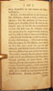 View image of 216ever, depended on the return of Mrs. Lessington. Rosalie, on her arrival at the house of Mr. Hillmore, found a very cordial reception; but the manners of the whole family were so unlike those she had in the happiest part of her life been accustomed to—the old lady was so vulgarly civil, the young men so impertinently familiar, and the misses so full of flutter and fashions,—that Rosalie forsaw she would be esteemed very bad company. They had already, from the report of Miss Maria, entertained an idea that their guest was proud and reserved; and Rosalie saw by their manner, that they disliked her and wished her away. The mother, because she feared her beauty might attract one of her sons; the daughters, through jealousy of their lovers. The next day after her arrival there she received a letter from her mother, which informed her that though Mrs. Grierson was doing well, yet it would be ten days before she should return. Rosalie, therefore, armed
) View image of 217 View image of 217herself with patience, to pass a few days longer where she was before she returned to Hampstead, but Montalbert could not suffer her to remain there without seeing her. As he was not known to the people of the house, he called under pretence of a message from Mrs. Vyvian, but he could only see her in a formal way in the presence of Mrs. Hillmore and her daughters, who prodigiously admired him as a very elegant genteel man indeed.—He found they were going that evening to the play, where he determined to be himself. It was then that he saw the superior beauty of Rosalie attract all eyes, and heard inquiries around him, who that lovely girl was in mourning? The faces of the Miss Hillmores were well known, though their party would have passed wholly unnoticed, but for the brilliant star that now first appeared among them. Montalbert, from the other side of the house, enjoyed a particular kind of pleasure at the admira-
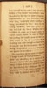 View image of 218tion excited by his wife: but one of the foibles of his temper was jealousy; when therefore he saw two or three young men, acquaintances of the Hillmores, enter their box, evidently with a design of being introduced to her; when he saw young Hillmore, who was a sort of city wit and city buck, displace one of his sisters in order to sit near Rosalie, he could remain where he was no longer; but crossing the house, went into the next box, where he sat the remainder of the evening, not near enough to speak to her, so entirely was she surrounded; but suffering inexpressible torments because she was spoken to by others. His impetuous spirit could ill submit to a longer course of such punishment. He went out, therefore, to a tavern, a few moments before the play was over, and wrote a note to her, in which he insisted on her leaving the Hillmores the next morning. "I will send a sevant, (said he), with a chariot and a letter, as if
) View image of 219 View image of 219from from Mrs. Vyvian........As the people you are with know neither her carriage nor her writing, you may very easily leave them without the least suspicion. I will take care of the rest; but remember, Rosalie, I must not be refused—I would not leave you exposed another day to the impertinence of the vulgar puppies you are surrounded by to be master of an empire." Montalbert, having sealed this letter, waited at the door of the box for her coming out; but as she had on each side of her competitors for the honour of leading her out, it was not without difficulty he found an opportunity of giving it to her. The next day an handsome chariot, with a servant in livery, was at the door of Mr. Hillmore by eleven o'clock; the latter brought a note apparently from Mrs. Vyvian, which Rosalie showed as a reason for leaving Mrs. Hillmore, who, while she expressed great concern that they were
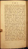 View image of 220 so soon to lose the pleasure of her good company, was, as well as the young ladies, heartily glad to see her depart. A short time brought her to a place where Montalbert waited for her to begin another short excursion from London. He endeavoured to appease the excessive fear she expressed, lest these journies should be discovered, by assuring her that he had taken every possible precaution to prevent it. That Mrs. Vyvian did not expect her for two or three days, at the end of which time he promised she should go back to Hampstead, and he had engaged a person to convey to him any letters that might arrive in the mean time from Mrs. Lessington, lest, from any alteration in her plan, she should return and not find her daughter where she expected.——These measures, and Montalbert's solemn assurances, that as soon as he saw her once more safe under the protection of her mother, he would no longer delay a journey which
) View image of 221 View image of 221 was so necessary on account of his own, and that he would force hmself, though at the expence of his present felicity, to pusue such measures as might secure uninterrupted possession hereafter.
|
){kind=link}
){kind=link}
){kind=link}
){kind=link}
){kind=link}
){kind=link}
){kind=link}
){kind=link}
){kind=link}
){kind=link}
){kind=link}
){kind=link}